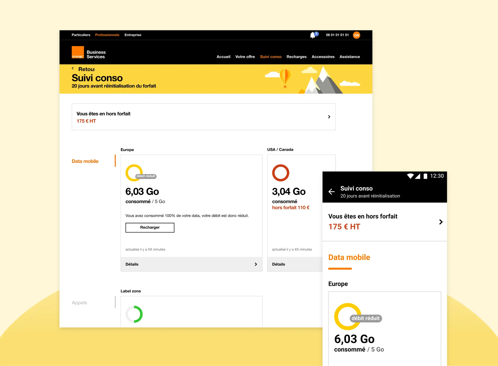

Janvier 2019 - Décembre 2019
Business Lounge est l'espace client dédié à la gestion de son forfait et de son mobile professionnel Orange (disponible sur le web, Android et iOS).

Les utilisateurs d'une ligne Orange Business Services ne connaissent souvent pas leur offre puisqu'elle a été souscrite par une personne tierce dans leur entreprise : le gestionnaire de la flotte mobile. L'objectif d'Orange Business Lounge est d'offrir aux utilisateurs un accompagnement sur-mesure et proactif dans l'utilisation du mobile professionnel.
Les cas d'usages principaux
C'est la fonctionnalité principale du service : elle permet de consulter la consommation de ses usages (data mobile, appels, SMS/MMS).
Les forfaits entreprises sont nombreux et leur fonctionnement, non connus des utilisateurs, peut varier d'un pays à l'autre. Le suivi de consommation est l'usage principal mais les informations remontées aujourd'hui ne permettent pas de répondre au besoin principal : comprendre pour analyser et ajuster son comportement au besoin.
Cette fonctionnalité permet aux utilisateurs de l'application via une recherche de connaitre le forfait qu'ils ont dans un pays et de leur présenter également des contenus d'assistance adaptés.
Orange souhaite enrichir cette fonctionnalité et l'intégrer également sur le site. La question est de savoir de quelle manière précisément, en comprenant notamment mieux les usages des professionnels dans un contexte de voyage à l'étranger (préparation / sur place).